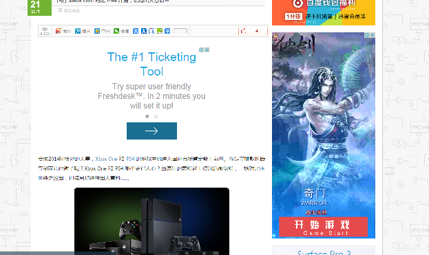

AdsRemover
Tool to remove and block annoying iframe Ads which is non-related to the topic of the page.
Usage
Save the code as a bookmark. Click the bookmark when needed.
Before

After

Black List
- bastatic.com //main source of Ads baidu.com
White List
- weibo // escape embeded weibo comments block